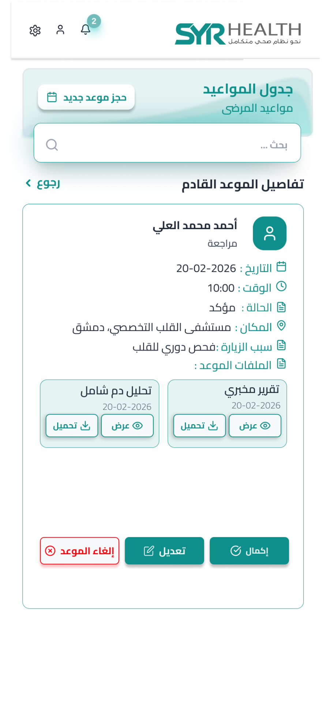
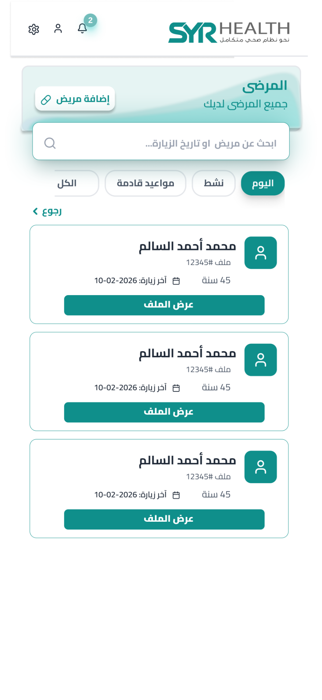
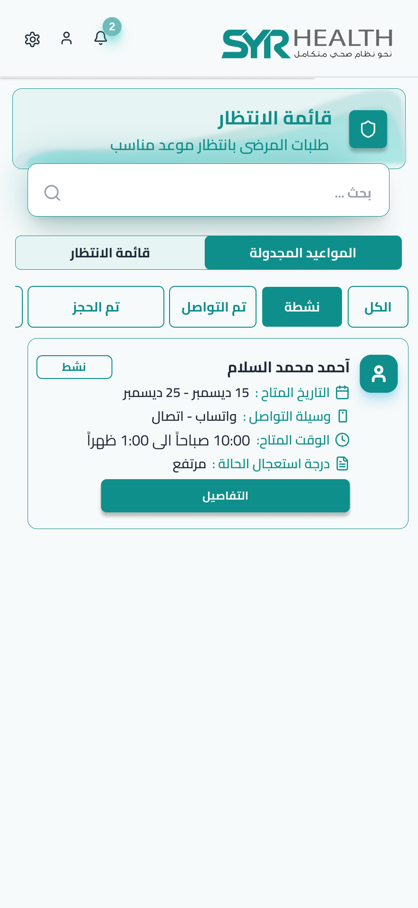
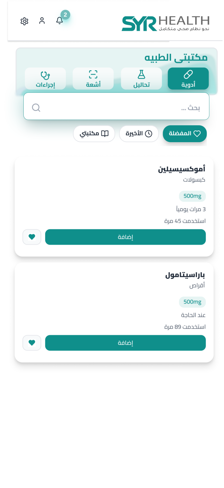
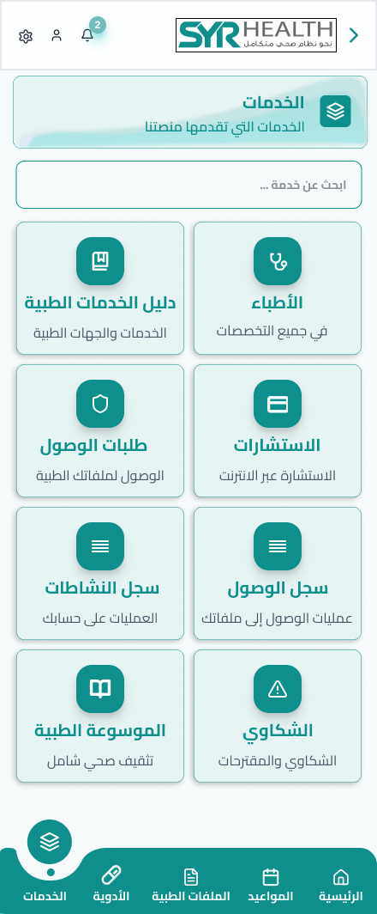
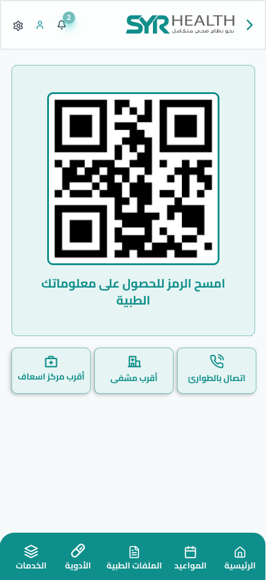
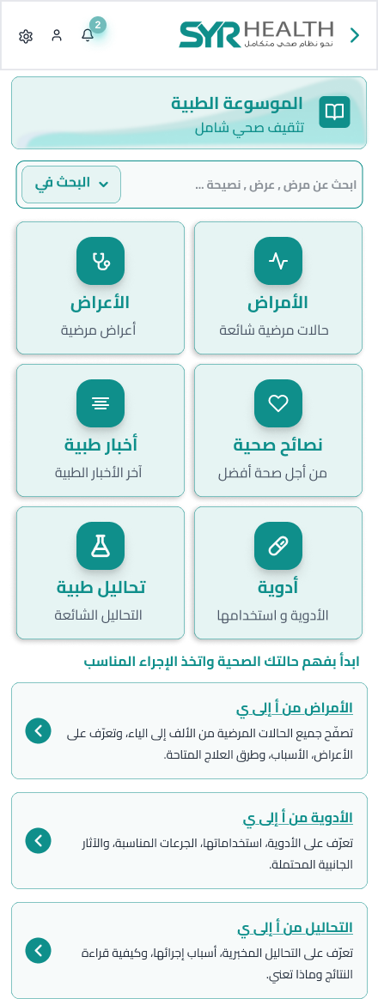
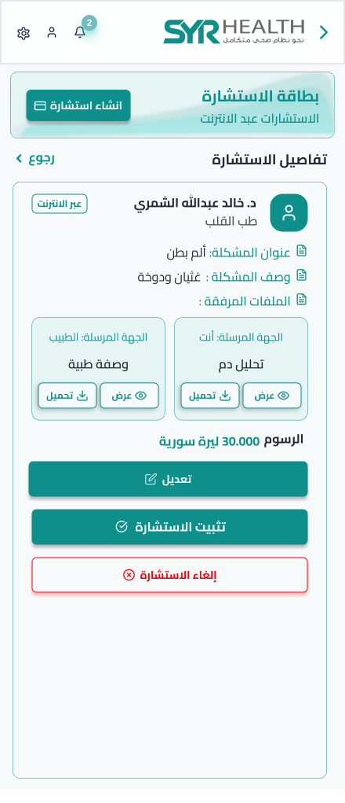

Tips to keep your heart healthyنصائح للحفاظ على صحة القلب
A short summary on the importance of periodic follow-up and a healthy lifestyle.ملخص قصير عن أهمية المتابعة الدورية ونمط الحياة الصحي.
Read moreقراءة المزيد ›SyrHealth brings patients, doctors, and clinics into one connected digital platform — appointments, medical records, online consultations, prescriptions, medications, and trusted health information, all in one place. يجمع SyrHealth المرضى والأطباء والعيادات في منصة رقمية متكاملة — مواعيد، سجلات طبية، استشارات عن بعد، وصفات، أدوية، ومعلومات صحية موثوقة في مكان واحد.
SyrHealth is a healthcare technology platform that helps patients manage their medical journey and helps doctors provide more connected, transparent, and accountable care. SyrHealth منصة تقنية صحية تساعد المرضى على إدارة رحلتهم الطبية وتمكّن الأطباء من تقديم رعاية أكثر تكاملاً وشفافيةً وموثوقيةً.
Your medical record, your appointments, your medications — owned and managed by you. سجلك الطبي، مواعيدك، وأدويتك — تحت إدارتك وملكيتك أنت.
Verified doctors with public profiles, ratings, specialties, and clear consultation options. أطباء معتمدون بملفات عامة وتقييمات وتخصصات وخيارات استشارة واضحة.
Encrypted data, granular access permissions, and full audit trails on every record. تشفير كامل للبيانات وصلاحيات وصول دقيقة وسجل تدقيق لكل عملية.
Nine connected capabilities working together — from finding a doctor to following up on your medications. تسع إمكانيات متكاملة تعمل معاً — من البحث عن الطبيب وحتى متابعة الأدوية.
Search by specialty, location, language, and consultation type.ابحث عن طبيبك حسب التخصص والموقع واللغة ونوع الاستشارة.
In-clinic or remote — confirmed in real time, with reminders.حجز حضوري أو عن بعد، يتم تأكيده فوراً مع تذكيرات قبل الموعد.
Secure video consultations with prescriptions issued straight to your record.استشارات فيديو آمنة مع وصفات طبية تُحفظ مباشرة في سجلك.
A unified medical history accessible to you wherever you go.تاريخ طبي موحّد متاح لك أينما ذهبت.
Upload lab results, imaging, and reports — organized automatically.ارفع نتائج التحاليل والأشعة والتقارير — مرتّبة تلقائياً.
Digital prescriptions, lab, and imaging orders sent securely.وصفات وأوامر تحاليل وأشعة رقمية تُرسل بأمان.
Never miss a dose — schedule, snooze, and pause from one place.لا تنسَ جرعة — جدوِل وأجّل وأوقف من مكان واحد.
Articles and guides on conditions, symptoms, and healthy living.مقالات وأدلة عن الأمراض والأعراض ونمط الحياة الصحي.
Critical info — blood type, allergies, conditions — accessible when it matters.معلومات حيوية — زمرة الدم، الحساسية، الأمراض — متاحة وقت الحاجة.
Patients without a fixed slot get matched to the next available opening.المرضى من دون موعد محدد يُطابقون مع أول موعد متاح مناسب.
For doctors: income, expenses, profit trends, and category breakdowns.للطبيب: الدخل والمصاريف واتجاهات الربح وتوزيع المصاريف.
Doctors request — patients approve. Every access is logged and reversible.الطبيب يطلب، المريض يوافق. كل وصول مسجَّل وقابل للسحب.
Manage patients, appointments, prescriptions, and reports from one secure space — on mobile and on the web. إدارة المرضى والمواعيد والوصفات والتقارير من مساحة آمنة واحدة — على الجوال والويب.




Take control of your medical journey. Find the right doctor, keep your records in one place, follow your medications, and read trusted health information. تحكّم في رحلتك الطبية. اعثر على الطبيب المناسب، احفظ سجلاتك في مكان واحد، تابع أدويتك، واقرأ معلومات صحية موثوقة.




SyrHealth ships with a continuously growing library of medical articles, condition guides, symptom explainers, health advice, and news — written and reviewed for clarity. يتضمّن SyrHealth مكتبة متنامية من المقالات الطبية وأدلة الأمراض وشرح الأعراض ونصائح صحية وأخبار، مكتوبة ومراجعة بأسلوب واضح.
What 140/90 actually means, and when to call your doctor.ماذا يعني الرقم 140/90 فعلاً، ومتى يجب التواصل مع طبيبك.
Why tapering and consulting your doctor matters before changes.لماذا يجب استشارة الطبيب قبل أي تغيير في جرعتك.
A practical guide for parents, with red flags to watch.دليل عملي للأهل مع علامات التحذير الواجب مراقبتها.
At SyrHealth we put patient privacy and data safety first. The platform is designed to make communication between patients and doctors easier, and to organize medical records, appointments, consultations, electronic prescriptions, and lab and imaging orders in a safe and structured way. في SyrHealth، نضع خصوصية المريض وسلامة بياناته في مقدمة كل خطوة. صُمّمت المنصة لتسهيل التواصل بين المرضى والأطباء، وتنظيم السجلات الطبية، المواعيد، الاستشارات، الوصفات الإلكترونية، وطلبات التحاليل والأشعة بطريقة آمنة ومنظمة.
The platform treats health data as sensitive data that requires protection and clear access permissions.تتعامل المنصة مع البيانات الصحية باعتبارها بيانات حساسة تتطلب حماية وصلاحيات وصول واضحة.
A medical record can only be accessed by authorized users and within the appropriate permissions.لا يتم الوصول إلى السجل الطبي إلا من خلال المستخدمين المخولين وضمن الصلاحيات المناسبة.
Sensitive access operations to medical records and files may be logged to support security and compliance.قد يتم تسجيل عمليات الوصول الحساسة إلى السجلات الطبية والملفات لدعم الأمان والامتثال.
SyrHealth provides the technical infrastructure to organize the service, while the medical decision remains the responsibility of the treating doctor.SyrHealth توفر البنية التقنية لتنظيم الخدمة، بينما يبقى القرار الطبي مسؤولية الطبيب المعالج.
Sign up with email or phone — or claim a profile created by your clinic.سجّل بالبريد أو الهاتف، أو استلم ملفاً أنشأه المركز الطبي.
Search by specialty, location, language, or service type.ابحث حسب التخصص أو الموقع أو اللغة أو نوع الخدمة.
Book, consult, track medications, and keep every record in one place.احجز، استشِر، تابع أدويتك، واحتفظ بكل شيء في مكان واحد.
Submit credentials and specialty information for review.أرسل وثائقك ومعلومات تخصصك للمراجعة.
Our team verifies your credentials before activation.يقوم فريقنا بالتحقق من وثائقك قبل تفعيل حسابك.
Manage patients, appointments, prescriptions, and orders.أدِر المرضى والمواعيد والوصفات والأوامر الطبية.
Follow the latest health news and updates from SyrHealth. تابع آخر التحديثات والأخبار الصحية من SyrHealth.
A short summary on the importance of periodic follow-up and a healthy lifestyle.ملخص قصير عن أهمية المتابعة الدورية ونمط الحياة الصحي.
Read moreقراءة المزيد ›A short summary on the role of digital records in tracking health status.ملخص قصير عن دور السجلات الرقمية في تسهيل متابعة الحالة الصحية.
Read moreقراءة المزيد ›A short summary on the role of medical tests in prevention and follow-up.ملخص قصير عن دور التحاليل الطبية في الوقاية والمتابعة.
Read moreقراءة المزيد ›SyrHealth is a digital health platform that helps patients and doctors organize appointments, consultations, medical records, electronic prescriptions, and lab/imaging orders within a structured technical environment. SyrHealth منصة صحية رقمية تساعد المرضى والأطباء على تنظيم المواعيد، الاستشارات، السجلات الطبية، الوصفات الإلكترونية، وطلبات التحاليل والأشعة ضمن بيئة تقنية منظمة.
No. The platform does not replace the doctor and does not provide an independent diagnosis. Medical decisions, diagnosis, and treatment are the responsibility of the treating doctor, while the platform provides the technical infrastructure for communication and service organization. لا. المنصة لا تستبدل الطبيب ولا تقدم تشخيصاً مستقلاً. القرار الطبي والتشخيص والعلاج مسؤولية الطبيب المعالج، بينما توفر المنصة البنية التقنية للتواصل وتنظيم الخدمة.
SyrHealth treats health data as sensitive data, and uses access permissions, sensitive-operation logging, and security measures to protect medical records and attachments. تتعامل SyrHealth مع البيانات الصحية كبيانات حساسة، وتستخدم صلاحيات وصول، تسجيل عمليات حساسة، وإجراءات أمان لحماية السجلات والمرفقات الطبية.
Only authorized users can access medical records — such as the treating doctor or service-related parties — according to permissions and approvals within the platform. يمكن للمستخدمين المخولين فقط الوصول إلى السجلات الطبية، مثل الطبيب المعالج أو الجهات المرتبطة بالخدمة، وبحسب الصلاحيات والموافقات داخل المنصة.
Sensitive access operations to medical records, files, or legal approvals may be logged for security, transparency, and compliance purposes. قد يتم تسجيل عمليات الوصول الحساسة إلى السجلات الطبية أو الملفات أو الموافقات القانونية لأغراض الأمان والشفافية والامتثال.
You can request account deletion, but some medical records, audit logs, or required data may be retained for legal, regulatory, or security reasons. يمكن للمستخدم طلب حذف الحساب، لكن قد يتم الاحتفاظ ببعض السجلات الطبية أو سجلات التدقيق أو البيانات اللازمة لأسباب قانونية أو تنظيمية أو أمنية.
Not always. Online consultations may help with guidance and follow-up, but the doctor may request a direct examination or a clinic visit. In emergencies you must go to the nearest hospital immediately. ليس دائماً. الاستشارة عن بعد قد تساعد في التوجيه والمتابعة، لكن الطبيب قد يطلب فحصاً مباشراً أو زيارة العيادة. في حالات الطوارئ يجب التوجه فوراً إلى أقرب مستشفى.
Electronic prescriptions can be viewed or downloaded based on the permissions available within the platform, after the doctor issues them. يمكن عرض أو تنزيل الوصفة الإلكترونية حسب الصلاحيات المتاحة داخل المنصة، وبعد إصدارها من الطبيب.
Data is shared only when needed to deliver the medical service or operate the service, according to authorized permissions and approvals. Data is not sold to advertisers. لا تتم مشاركة البيانات إلا عند الحاجة لتقديم الخدمة الطبية أو تشغيل الخدمة، وبحسب الصلاحيات والموافقات المعتمدة. لا يتم بيع البيانات للمعلنين.
No. SyrHealth is not a substitute for ambulance or emergency services. In emergencies you must call the ambulance or go directly to the nearest hospital. لا. SyrHealth ليست بديلاً عن الإسعاف أو خدمات الطوارئ. في الحالات الطارئة يجب الاتصال بالإسعاف أو التوجه مباشرة إلى أقرب مستشفى.
No. Any awareness-oriented medical content within the site does not replace consulting a doctor and should not be used as a substitute for diagnosis or medical treatment. لا. أي محتوى طبي توعوي داخل الموقع لا يغني عن مراجعة الطبيب ولا يجب استخدامه كبديل عن التشخيص أو العلاج الطبي.
Download the patient app today, or join as a doctor and bring connected care to your patients. حمّل تطبيق المريض اليوم، أو انضم كطبيب لتقدّم رعاية متّصلة لمرضاك.